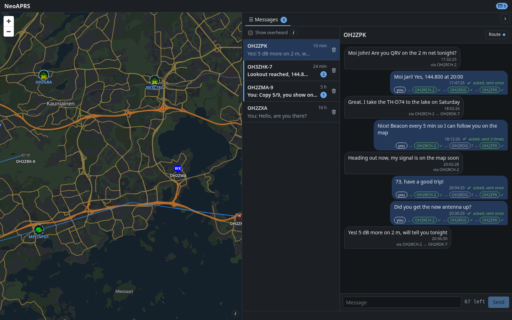
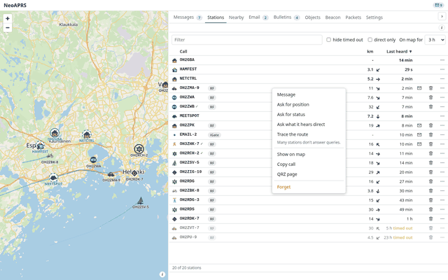
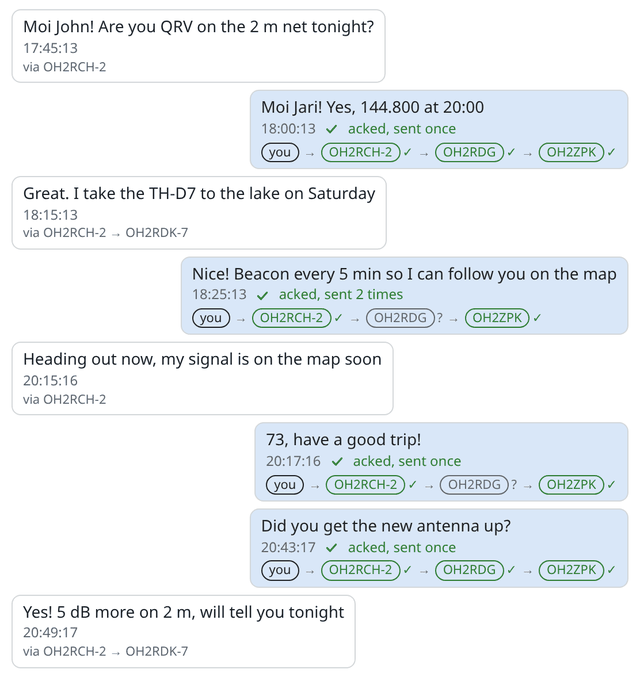
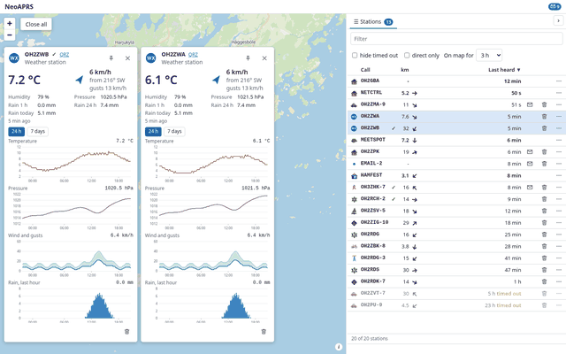
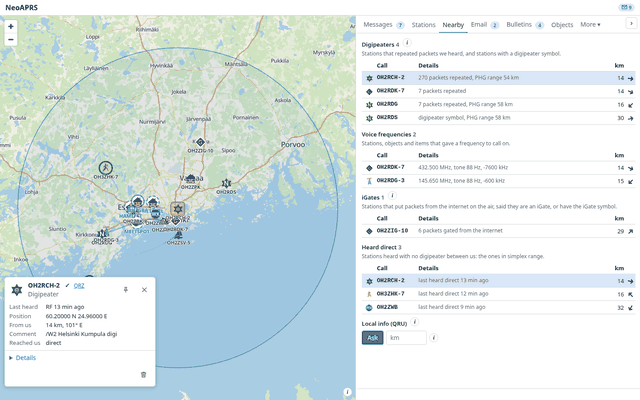
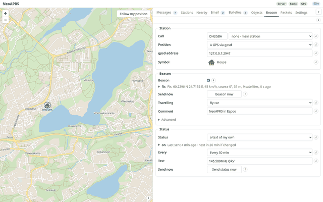
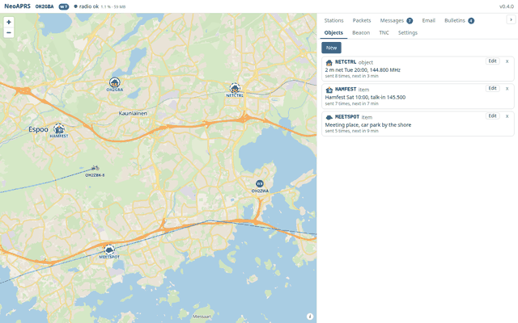
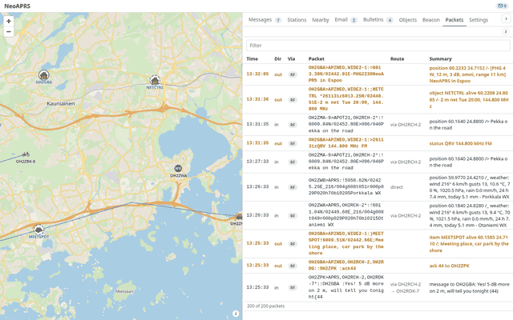

NeoAPRS
APRS client for Windows, macOS, Linux and the Raspberry Pi
See who is on the air around you, chat with other hams and know your message arrived. When the internet or the local network goes down, keep talking: the built-in Mercury modem carries your messages far beyond VHF range. Works with the radio you already have, and it is free.


- 40 kmon 10 W in the first HF test on the air
- −4 dBsignal-to-noise where Mercury still decodes
- 4systems: Windows, Mac, Linux, Raspberry Pi
- 8languages
APRS over HF
The Mercury modem is built in: beacons and messages across 1000 to 2000 km.
Messaging
Conversations, bulletins and email, and the path each message took, hop by hop.
Any KISS TNC
Kenwood, Mobilinkd, NinoTNC, Direwolf and more, over serial, USB, Bluetooth or TCP.
On every screen
Run it on a Raspberry Pi by the radio; open it on a phone, tablet or laptop.
Download
- Download for WindowsNeoAPRS-Setup.exe · no administrator rights needed
- Open the downloaded file. If Windows says
Windows protected your PC
, choose More info, then Run anyway. - Go through the installer. On its last page, Open NeoAPRS now starts it. NeoAPRS asks for your call, your position and your radio. No radio at hand: choose the radio type Dummy.
- Download for MacNeoAPRS-arm64.dmg · Apple silicon (M1 or newer), macOS 14 or newer
- Open the downloaded file and drag NeoAPRS to Applications.
- The first time, right-click NeoAPRS in Applications and choose Open. If the Mac says it could not be verified: System Settings, Privacy & Security, Open Anyway.
- NeoAPRS asks for your call, your position and your radio. No radio at hand: choose the radio type Dummy.
- Download for LinuxNeoAPRS-x86_64.AppImage · Ubuntu 22.04, Debian 12, Fedora 35 and newer
- Open a terminal and make it a program.
chmod +x ~/Downloads/NeoAPRS-x86_64.AppImage - Start it. From then on a double-click on the file starts it too.
~/Downloads/NeoAPRS-x86_64.AppImage - NeoAPRS asks for your call, your position and your radio. No radio at hand: choose the radio type Dummy.
- Download for Raspberry Pineoaprs_arm64.deb · 64-bit Raspberry Pi OS
- Open a terminal and install it. It asks for your password.
sudo apt install ~/Downloads/neoaprs_arm64.deb - Start NeoAPRS, now and every time the computer starts.
neoaprs service install --linger - Open http://localhost:7303 in the browser. NeoAPRS asks for your call, your position and your radio. No radio at hand: choose the radio type Dummy.
- From another computer, log in to the Linux PC with SSH, the way you set it up (
ssh YOU@NAME.local). - Download NeoAPRS.
wget https://github.com/oh2gba/neoaprs/releases/latest/download/neoaprs_amd64.deb - Install it. It asks for your password.
sudo apt install ./neoaprs_amd64.deb - Let other computers and phones open it.
neoaprs db set web/network true - Start NeoAPRS, now and every time the computer starts.
neoaprs service install --linger - Only if you have turned on a firewall: let the page through. Raspberry Pi OS and Ubuntu come with it off, so most can skip this.
sudo ufw allow 7303/tcp - Show the computer's name and its address, and the key the other computer or phone will ask for.
hostname; hostname -I; neoaprs db get web/key - On the other computer or phone, open
http://NAME.local:7303with the name in place of NAME. If it does not open, use the address instead, the first number, such ashttp://192.168.1.20:7303. Type the key. NeoAPRS asks for your call, your position and your radio. No radio at hand: choose the radio type Dummy.
- From another computer, log in to the Raspberry Pi with SSH, the way you set it up (
ssh YOU@NAME.local). Raspberry Pi OS must be the 64-bit one. - Download NeoAPRS.
wget https://github.com/oh2gba/neoaprs/releases/latest/download/neoaprs_arm64.deb - Install it. It asks for your password.
sudo apt install ./neoaprs_arm64.deb - Let other computers and phones open it.
neoaprs db set web/network true - Start NeoAPRS, now and every time the computer starts.
neoaprs service install --linger - Only if you have turned on a firewall: let the page through. Raspberry Pi OS and Ubuntu come with it off, so most can skip this.
sudo ufw allow 7303/tcp - Show the computer's name and its address, and the key the other computer or phone will ask for.
hostname; hostname -I; neoaprs db get web/key - On the other computer or phone, open
http://NAME.local:7303with the name in place of NAME. If it does not open, use the address instead, the first number, such ashttp://192.168.1.20:7303. Type the key. NeoAPRS asks for your call, your position and your radio. No radio at hand: choose the radio type Dummy.
Every file is on the release page. The source code is on GitHub: Python and Vue, GPL v3 or later.
New
APRS over HF, with Mercury
Read the first test on the air: 40 km on 10 W, every message delivered →
How it works, and what was measured: the technical note →
Mercury is a modern HF modem by Rhizomatica. NeoAPRS puts APRS on it, as a second radio beside the FM one: an SSB radio with a sound card. HF stations are on the same map and in the same messages, tagged HF.
| Old HF packet, 300 baud | Mercury in NeoAPRS | |
|---|---|---|
| On a noisy band | Lost as soon as the noise comes up | Still heard when the signal is no stronger than the noise every frame at 3 dB signal-to-noise in our simulations |
| A bad moment | One wrong bit and the whole packet is gone | Small errors are repaired on arrival a strong error-correcting code (LDPC) |
| Fading and echoes | Garble the packet | Taken in its stride nine carriers in 500 Hz, each with a guard time against the ionosphere's echoes |
| Other stations | Sends on top of them | Listens first and waits for a free channel |
Ready when the internet is not
When the internet and the phone network are down, APRS over HF still works: positions, short messages and bulletins between stations hundreds or thousands of kilometres apart. A radio, a laptop or a Raspberry Pi, a battery and a wire antenna are enough. No servers, no accounts, nothing in between.
VARA or Mercury?
| What you want to do | VARA, with Winlink, VarAC or BPQ | Mercury in NeoAPRS |
|---|---|---|
| See who is on the air, on a map | No | Yes, every station heard, with its position |
| Reach every station at once | Mostly one station at a time | Yes: beacons, bulletins and objects everyone hears |
| Short messages to one station | Yes, in a connected chat | Yes, acknowledged, with no connection to set up |
| E-mail to and from the internet | Yes, through Winlink | No |
| Long texts and files | Yes | No, APRS messages are short |
VARA means here the original VARA HF and FM and compatible modems such as xara. Both kinds of modem can live on the same radio.
A first
APRS has not been carried over Mercury before. NeoAPRS does it, with the APRS you know: positions, objects and messages.
Far
Stations 1000 to 2000 km away, on one HF frequency, with no digipeaters and no internet.
Nothing to install
Mercury is inside NeoAPRS. The sound card and the keying are preselected; Tune and Test set up the radio.
Fast enough
A frame takes 3.8 s on the air.
Try it first
The Dummy HF radio makes up distant stations and plays the modem through your speakers.
| 40 m | 7.0541 MHz USB |
|---|---|
| 20 m | 14.1070 MHz USB |
| 6 m | 50.620 MHz USB |


Features
-
Stations
Every station heard, with distance, bearing and when, tagged FM or HF. The row menu sends a message or an APRS query.

-
Messages
Acks and retries, and the way each message went through the digipeaters. Bulletins, group messages and email through the APRS gateway.

-
Weather
Readings of APRS weather stations, with 24 hour and 7 day graphs.

-
Nearby
Digipeaters, iGates and voice frequencies, nearest first, with a digipeater's range on the map.

-
Beacon
Fixed, or from a GPS with SmartBeaconing. Receive only is one tick.

-
Objects
Your own APRS objects and items on the map, sent on FM, HF or both.

-
Packets
Every frame with its radio and path. Optional fill-in digipeater and receive-only iGate.

-
Phone and tablet
Open it on any device at home with an access key. Eight languages.


Radios and TNCs
- Kenwood TH-D7, TM-D700, TS-2000; TNC-2 clones (MFJ-1270B, 1274, 1278, TAPR)
- serial, 9600
- Kenwood TM-D710, TH-D72
- serial or USB
- Kenwood TH-D74, TH-D75
- USB or Bluetooth
- Mobilinkd TNC3, TNC4
- USB, Bluetooth or Bluetooth LE
- BTech UV-PRO, Vero VR-N76, Radioddity GA-5WB (untested)
- Bluetooth
- PicoAPRS V4 (untested)
- Bluetooth, USB-C or TCP
- LoRa APRS, CA2RXU firmware (untested)
- KISS over TCP or Bluetooth LE
- NinoTNC, TNC-Pi, TNC-X, any TNC in KISS mode
- USB or serial
- Kantronics KPC-3+
- RS-232
- Yaesu, Icom or any radio with a sound-card interface (Digirig, SignaLink), through Direwolf
- KISS over TCP
- HF: an SSB radio with a USB sound card or an interface (DigiRig, SignaLink)
- Mercury modem, built in
- A GPS receiver
- gpsd or serial
The radio guide has the setup of each. The calls in the screenshots are made up.